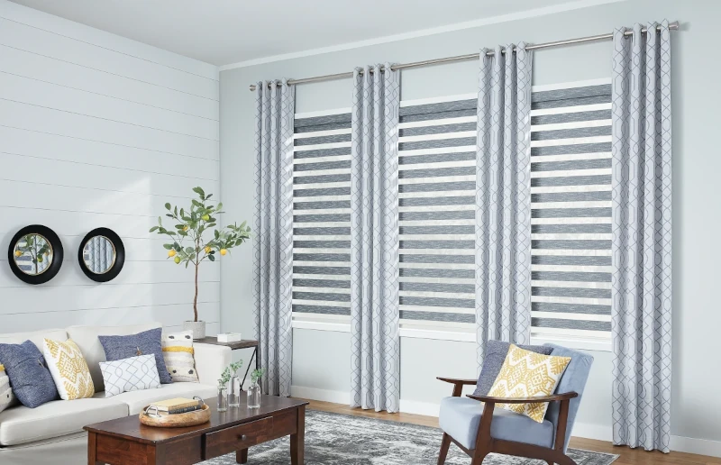
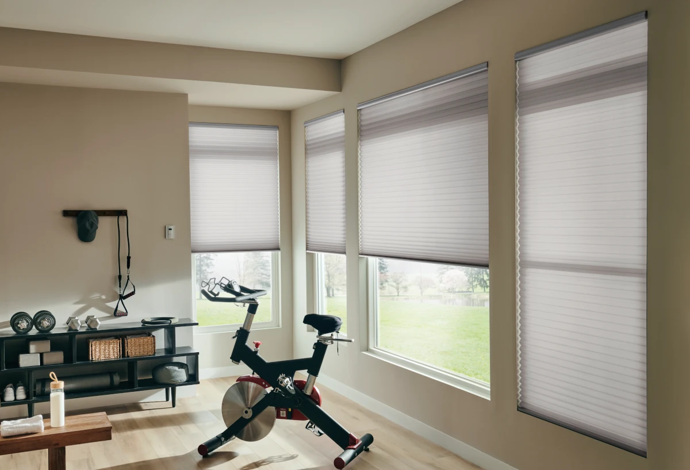
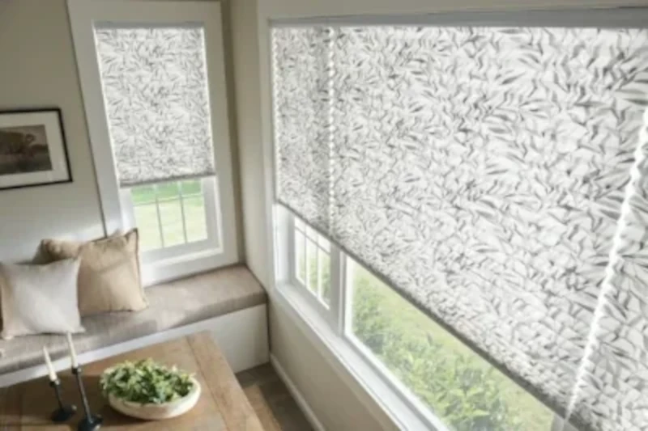

What Window Shades Options are there for Oklahoma?
Shaded In The Sun offers a variety of window shades that blend form and function to increase comfort and convenience for every home. Choose from a wide selection of designs that offer privacy, precise light control, easy operation, and protection from excess heat, glare, and UV rays—in on-trend colors and materials. Learn more about how shade opacities work to find the perfect balance of light and privacy, or discover why energy-saving shades are essential for Oklahoma homes.
Call Brent & Edna today at 405-259-5599
for your window treatment questions.
Roller Shades

Graber Roller Shades present a clean, modern style in fresh, on-trend fabrics—from sheer to blackout. You'll find roller window shades fit any window, including your extra-wide windows. Plus, the fabric-wrapped flat valance offers a cool, contemporary option, making it easier than ever to coordinate clean, modern style throughout your whole home.
Layered Shades
Layered shades (also known as zebra shades) offer a modern take on light control with their alternating bands of sheer and opaque fabrics. When open, the layers align to gently filter light through the sheer material, while closed bands block light for a clean, elegant look. Zebra shades come in exclusive prints, patterns, and textures to create a unique and distinctly modern feel. Discover why zebra shades are Oklahoma City's trending window treatment choice.
Natural Shades

Naturally organic and beautifully handwoven, Graber Natural Woven Window Shades are an elegant way to incorporate the colors and patterns of nature into your décor. Crafted from sustainable, and natural materials such as jute, bamboo, wood, and grasses, they are both smart and green for unique, casual luxury and style.
Cellular Shades
Cellular shades are easy to use, highly durable, energy efficient, and available in fabrics ranging from sheer to blackout. The energy efficiency and beauty of Graber's honeycomb shades have made them one of today's most popular window treatments. They offer a special combination of functionality and elegance, which makes them at home in nearly every room. Perfect for cooling hot Oklahoma sunrooms while maintaining style.
Sliding Panels

Sliding panels are a sleek, modern, versatile—and the ideal solution for wide windows and patio doors. For a perfectly coordinated look, select a fabric shared with other Graber collections, including Classic Roman, Natural, Roller, and Solar shades.
Pleated Shades
Pleated shades come in eye-catching colors and patterns. They combine the advantages of a traditional shade with a modern design that features crisp, even pleats. The result is a window treatment that can work in nearly any room. Pleated-shade fabrics look great on their own or can be combined with liners for added privacy and light control.
Solar Shades for Oklahoma City Homes

Graber Solar Shades are perfect for Oklahoma City's intense summer sun. These innovative shades block heat and harmful UV rays while maintaining your view to the outdoors—making them ideal for OKC and Edmond homes where sun control is essential. Our solar shades offer superior sun and heat protection, lower your home's cooling costs, and protect your furniture from fading. With a wide range of opacities (from 1% to 10% openness), expanded width options for extra-wide windows, and a sleek, flat valance, it's never been easier to design your whole Oklahoma City home in a clean, modern style. Available in motorized options for added convenience. Call 405-259-5599 for a free quote on solar shades for your Edmond, Nichols Hills, or OKC metro home.
Sheer Shades

Go from sheer and clear to private and serene in seconds with Graber Sheer Shades. Clean and modern, these “soft blinds” combine the gentle, light filtering attributes of soft, fabric shades with the reliable light control and functionality of conventional blinds. And now they're available with the new cordless lift system—for the ultimate in smooth precision.
Roman Shades

Discover the versatility, warmth, and beauty of Graber Roman Shades, available in three distinct types. Classic Roman shades combine a timeless look with unmatched functionality. Tailored Roman Shades offer a dazzling variety of colors and patterns, hand-tailored with options to suit every décor. And Natural Roman Shades utilize the beauty of naturally grown materials to create window treatments that are true works of art.